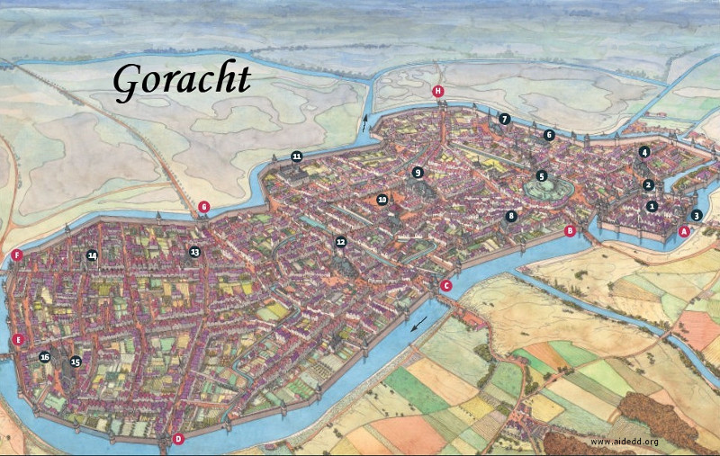

Goracht
Goracht (6810 habitants) est la capitale du duché d'Agramor. La ville est entièrement fortifiée, et un canal artificiel a même été creusé tout le long des remparts pour renforcer les protections. Les alentours de Goracht sont des champs, des champs et encore des champs. Une année se cultive le côté sud, l'année suivante le côté nord, et ainsi de suite au fil des ans. L'ordre et la discipline règne dans toute la province, et plus encore dans la capitale. La milice y est omniprésente. La ville est austère, mais ni pauvre ni riche. Seul le splendide palais du duc fait de Goracht une ville particulière.
Carte

{kind=link}
Goracht (968 x 613)
Les portes
- A. Palais du Duc.
- B. Porte de l'Esprit. Donne sur le quartier religieux de Goracht (prêtres).
- C. Porte de l'Épée. Donne sur les quartiers des nobles (seigneurs et affiliés).
- D. Porte de la Monnaie. Donne sur les quartiers des bourgeois (riches commerçants).
- E. Porte de la Main. Donne sur les quartiers populaires (ouvriers).
- F. Porte du Fléau. Donne sur les quartiers populaires (ouvriers).
- G. Porte du Tonneau. Donne sur les quartiers des bourgeois (riches commerçants).
- H. Porte du Bouclier. Donne sur les quartiers des nobles (seigneurs et affiliés).
Lieux particuliers
- Donjon. Les appartements privés du duc, dans le grand donjon de Goracht.
- Table des Pairs. Lieu de réunion pour cette assemblée constituée des seigneurs les plus influents du duché.
- Pont-levis. Accès au palais du duc. N'y entre pas qui veut, les contrôles sont des plus stricts et des plus rigoureux.
- Grande chapelle d'Oghma. La plus grande école de la ville, là où sont instruits quasiment tous les nobles d'Agramor par les prêtres d'Oghma.
- Grand temple de Torm. Dieu de l'honneur et du devoir, Torm est un des dieux les plus vénérés par les hautes classes sociales du duché.
- Comptoir des Mercenaires. Il est possible ici de recruter des gens d'armes, de tous niveaux, et en nombre très importants s'il le faut, pour tous types de missions.
- Bureau de l'immigrations. Tous les non-humains entrant en ville doivent se faire enregistrer (mais le mot correct serait plutôt interroger) dans ce bâtiment, sous peine d'être passible de sanctions disproportionnées allant jusqu'à la peine de mort.
- Milice. Le principal bâtiment de la milice de la ville. On ne plaisante pas avec l'ordre à Goracht.
- Temple de Tempus. Le culte de Tempus est le deuxième importance, après Torm, dans le duché.
- Assemblée des Propriétaires. Lieu de réunion de cette assemblée constituée des personnalités les plus riches du duché.
- Guilde du Commerce. Ici se traitent les affaires commerciales de la ville et de la province toute entière.
- Temple de Chauntéa. Quand on connaît l'importance de l'agriculture dans l'économie d'Agramor, il n'est pas surprenant de trouver un si grand bâtiment pour la déesse Chauntéa à Goracht.
- Taverne des 3 dieux. Aménagée dans un ancien couvent, cette taverne à l'ambiance gothique est l'un des rares lieux de dépravations de la cité.
- Forge de Malafait. La meilleure forge de la province, Malafait y fabrique des armes de toute beauté.
- Chapitre de Saris. Construit dans les quartiers pauvres de la ville, comme le voulait la tradition de Saris.
- Auberge du Bon vin. Une auberge simple, bon marché, et au vin excellent.
Écrit par blueace. Basé sur une carte de Lille de Jean-Claude Golvin, du CNRS